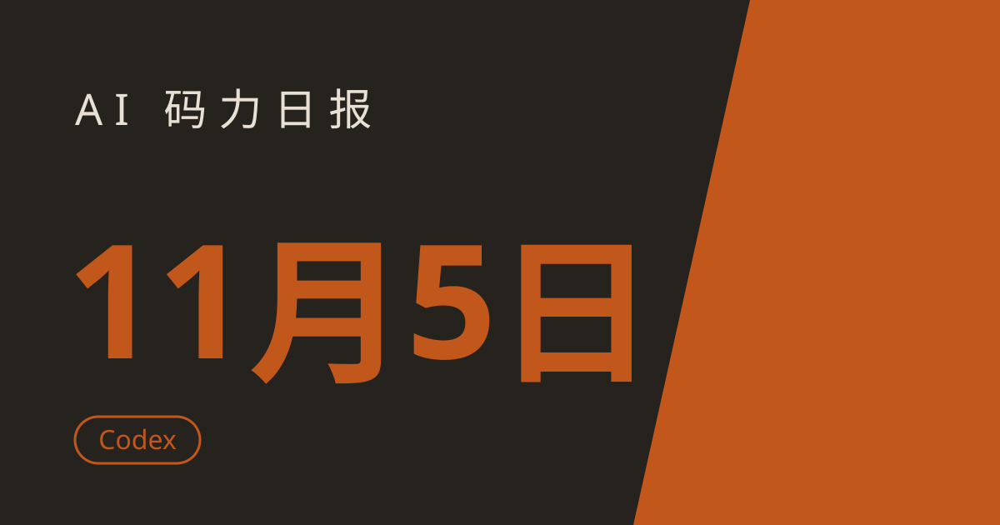

AI 码力日报 · 2026年11月5日

⚡ 一句话速览
- OpenAI 收购 Pierre Computer：Codex 正在从"写代码的 agent"变成"管代码的基础设施"，GitHub 的护城河被正面挑战。
- Anthropic 扩大 Claude Marketplace：11 月 4 日上线 25+ 合作 agent 与产品，企业客户能用同一笔 Anthropic 承诺消费额采购。
- Google 的 Jules 进入倒计时：11 月 11 日起停止接受新任务、只读，年底 12 月 31 日彻底下线，能力并入 Antigravity。
- 微软 12 月 2 日动手换模型：Power Platform 里 Claude Sonnet 4.6、Grok 4.1 Fast 等将被新 GPT 模型自动替换，旧提示自动迁移。
🤖 今日 AI Coding 动态
OpenAI 收购 Pierre：Codex 从"帮你写代码"伸向"替你管代码"
跟你有啥关系：如果你用 Codex，未来它可能不只是写代码的 agent，还会是代码存放在哪、怎么分支、怎么回滚的那一层。Axios 11 月 4 日报道，OpenAI 将收购开发者工具公司 Pierre Computer，交易金额未披露；Pierre 的 Code Storage 会直接集成进 Codex。Pierre 今年 10 月才推出 Code Storage，主打"白标、超低延迟的 Git 基础设施"，让应用和 agent 不用受人类开发者导向服务的限流和登录限制，就能按需建仓库、推代码。值得注意的是，这套技术其实已经跑在 Codex 里面了——OpenAI 11 月 2 日还公布了自研的 Git 后端 Pando，称其中位推送延迟降低了近 80%。这也是 OpenAI 今年围绕 Codex 的第三笔收购，此前是 3 月的 Astral（uv、Ruff 的作者）。我的判断：这场仗的标靶很清楚，就是微软的 GitHub——Cursor 8 月也推出了自己的代码托管平台 Origin。代码托管正在从"人的工具"变成"agent 的基础设施"，谁先把这层攥在手里，谁就掌握了 agent 写代码的默认路径。原文链接
Anthropic 扩大 Claude Marketplace：25+ 合作产品，企业能用一笔承诺额打包买
跟你有啥关系：如果你在企业里推 Claude，这次扩容意味着安全、开发基建、创意生产力工具可以走同一张 Anthropic 账单，不用再一家一家单独采购。Anthropic 11 月 4 日宣布扩大 Claude Marketplace，上线 25 个以上的合作 agent 与产品，覆盖安全、开发者基础设施、创意与生产力四个方向——比如 Chainguard Harness（在隔离微虚拟机里从源码构建应用并做漏洞探测）、Cyera Agent Guardian（在 Claude 运行前清点部署、管控提示词与文件权限）。关键机制是：符合条件的企业客户可以把 Anthropic 的承诺消费额（committed spend）用于购买这些合作产品，一笔承诺覆盖 Claude 和合作软件，目前是有限预览，需申请或联系客户团队确认资格。我的判断：这招学的是云厂商的 marketplace 打法——Anthropic 不再只卖模型，而是在卖"Claude 周边的一站式采购"。对中小团队影响不大，但对已经签了 Anthropic 大单的企业，选型时合作产品会天然占优。原文链接
Google 的 Jules 进入倒计时：11 月 11 日只读、12 月 31 日下线，Antigravity CLI 同日发 1.5.0
跟你有啥关系：如果你还在用 Jules 跑异步任务，现在就得动手迁——没有自动迁移，只有导出。Google 10 月 29 日宣布，异步编程 agent Jules 将在 11 月 11 日停止接受新任务、转为只读，12 月 31 日彻底下线，经验并入 Antigravity。导出已经开放，覆盖账号设置、环境变量、定时任务、已连接仓库、保存的记忆、配置脚本和全部会话历史（含提示词、计划、活动日志和代码补丁）。同一条线上的另一条消息：Antigravity CLI 11 月 4 日发了 v1.5.0，可以作为编辑器 agent 走 ACP 协议、把对话发给远程 agent，还能用 /projects 管理本地项目。我的判断：Google 正在把散落的编程 agent（Gemini CLI、Jules）往 Antigravity 这一个品牌里收，短期看是收缩，长期看是想让 Antigravity 成为它唯一的编程 agent 入口——用 Jules 的人先导出再说，别等到 12 月 31 日。原文链接
微软 12 月 2 日动手：Power Platform 里的 Claude 和 Grok 模型全部换成新 GPT
跟你有啥关系：如果你在 Power Apps、Power Automate 或 Copilot Studio 里配过提示词用的模型，12 月 2 日之后它们会被自动换掉，不用你动手，但效果可能变。微软 11 月 3 日发布的消息中心通知（MC1536101）说，Copilot Studio、Power Automate 和 Power Apps 里提示词可用的模型将更新为更新的 OpenAI GPT 模型，层级价格不变；同时退役一批模型：基础档的 GPT-4.1 mini、标准档的 GPT-4.1、GPT-5 chat、GPT-5.3 chat、Claude Sonnet 4.6、Grok 4.1 Fast reasoning，高级档的 GPT-5 reasoning、GPT-5.2 reasoning、Claude Opus 4.6，分别由 GPT-6 Luna、ChatGPT-latest、GPT-6 Reasoning 替代。现有提示词会自动迁移到对应层级的替换模型，12 月 2 日前完成。我的判断：这是微软在自家低代码平台上"收编"模型路线的明确信号——第三方模型（Anthropic、Grok）从 Power Platform 的提示词里出局，往后微软生态里的默认模型只会越来越向 OpenAI 一家集中。原文链接
Anthropic 水印第二波：11 月 16 日起，四款老 Claude 也要打上隐形标记
跟你有啥关系：上周是 Mythos 5、Opus 4.7、Sonnet 4.6 这批，这周轮到更老的型号——如果你在生产里用 Claude API 出内容，合规清单又要加一行。Anthropic 11 月 4 日再发邮件给 API 客户：从 11 月 16 日起，Claude Opus 4.6、Opus 4.5、Sonnet 4.5、Haiku 4.5 也将加上文本水印；Opus 4.6 原定 11 月 3 日上线，这次确认推迟到 11 月 16 日，Bedrock 上线可能再晚几天。注意一个关键细节：这四款的水印只在 temperature、top_p、top_k 三个采样参数都保持默认值时才生效——改任何一个，水印就没了。Anthropic 在邮件里直言："如果你依赖水印做合规，请把这些参数保持默认。"背景仍是欧盟《人工智能法案》的标注义务，过渡期 12 月 2 日截止。我的判断：水印这事正在从"新模型标配"变成"全量补课"，但默认参数才生效的口子，等于把合规责任推回给了开发者——别指望水印能当成防伪证据用。原文链接
📱 AI 应用新品
FlutterFlow 推出 AI 原生应用搭建器：一句话出 iOS + Android 双端原生应用
是什么：老牌低代码平台 FlutterFlow 11 月 4 日推出的 AI 原生应用搭建器：用对话描述需求，agent 帮你开发应用、接后端、准备上架 App Store 和 Google Play，一次产出 iOS 和 Android 两个原生端。解决什么问题：以前"一句话生成应用"的工具大多只能出网页端或套壳包，FlutterFlow 的卖点是真原生——同一个应用跑在双端，还带后端、数据分析和上架流程；原有的可视化搭建平台则改名 FlutterFlow Studio 继续提供，两条线并行。免费额度/价格：官方公告未公布免费档细节，以官网实时价格为准，适合先拿一个小应用试水再决定。适合谁：想快速把一个点子变成能上架的 App、又不想从零写双端代码的独立开发者和小型团队；但提醒一句：上架审核、应用内购这些脏活 agent 不会替你全包，发布前自己过一遍。原文链接
🐑 今日羊毛
You.com 新账号送 $100 API 额度：不用绑卡，搜索 API 直接薅
一句话：You.com 给每个新账号 $100 免费 API 额度，官方 FAQ 明确写着不用信用卡，适合拿搜索 API 做实验。
- 怎么薅：在 You.com 官网注册新账号（不用绑卡），额度直接到账；注意这是开发者 API 额度、不是聊天应用，约合 20,000 次网页搜索 API 调用（按 $5/1,000 次算）。直达链接
- 有效期：新账号注册即得（截至撰写时），官方未公布额度过期时间，以官网实时规则为准
- 适合谁：要做带联网搜索的 agent、RAG 实验的开发者；约省 $100
Kiro 免费档常驻 + 11 月首升福利：本月剩余时间免费升 Pro，再送 500 试用额度
一句话：AWS 的 spec 驱动编程 IDE Kiro 免费档每月 50 credits 常驻；从 11 月 1 日起，免费用户第一次升级可享本月剩余时间免费 Pro 额度，外加 500 试用 credits（12 个月内有效）。
- 怎么薅：用 AWS Builder ID 注册 Kiro 免费版（每月 50 credits，可用 Claude Sonnet 4.5/4.0、DeepSeek 3.2、MiniMax M2.5、GLM-5、Qwen3 Coder Next 等模型）；11 月内第一次点升级，剩余本月按 Pro 额度免费、另得 500 试用 credits——注意升级要绑有效卡，且只有第一次升级享此福利。直达链接
- 有效期：免费档常驻；首升福利自 2026 年 11 月 1 日起（截至撰写时），试用 credits 12 个月内有效
- 适合谁：想低成本试 Kiro 这套 spec 驱动开发流程的人；约省 $20 起
Inception 新账号送 1 亿免费 token：纯文本模型 API，够跑一阵子实验
一句话：Inception 给新账号一次性 1 亿免费 API token，按 Mercury 3 发布时的价格折算约值 $10–$35，纯文本模型、开发者 API。
- 怎么薅：在 Inception 官网注册新账号领取一次性额度，直接调 API 用；注意这是纯文本模型，不带图像能力。直达链接
- 有效期：新账号一次性领取（截至撰写时），以官网实时规则为准
- 适合谁：想低成本跑大批量文本实验、测新模型性价比的开发者；约省 $10–$35
⭐ 今日 GitHub 热门项目
morluto/rea：让 agent 逆向任意软件——没源码也能讲清一个功能是怎么实现的
一句话介绍：给 coding agent 装上的逆向工程工具包：指着一个应用，agent 就能讲清某个功能是怎么实现的，还附证据和结论的边界。解决什么问题：想学一个产品的实现、或者复刻某个交互时，以前得自己一点点抠二进制、翻 JS；rea 把这套活交给 agent——原生二进制走 Hopper/Ghidra，JS 和 Electron 应用、.NET 程序集、网站都能查，分析全在本地跑，结果带证据和局限性说明。⭐ 11 月 4 日单日 +2,282 星（截至撰写时）。适合：做竞品学习、逆向研究、想理解软件结构的人；提醒一句：只用来学技术、做自己的东西，别拿去抄别人的专有产品。项目地址
mattpocock/skills：一个让 AI 动手前先问清楚的 skill，专治"需求模糊就开干"
一句话介绍：给 AI 助手装一个"先问问题再写代码"的 skill：需求含糊时，它会先追问细节，而不是直接造出一个错的东西。解决什么问题：vibe coding 最大的浪费不是写得慢，而是方向错了重写——这个 skill 强迫助手在动手前把需求问清楚，几分钟的追问能省一下午删代码。⭐ 11 月 4 日单日 +1,307 星（截至撰写时）。适合：天天被 AI"理解错需求"折磨的人；装上之后第一次用可能觉得啰嗦，但返工次数下来就知道值了。项目地址
NVIDIA/auto-ontology：给数据分析 agent 一份"经过认证的指标定义"，别再瞎算数
一句话介绍：NVIDIA 开源的库，把企业元数据变成分析 agent 的上下文层：指标定义先对齐、再查数，答案附带出处。解决什么问题：问 agent"上季度营收多少"时，最怕它把"营收"和"回款"混成一个数；auto-ontology 从元数据建本体、调和冲突的指标定义，再通过 MCP、CLI 或 API 对外提供，问题转成 SQL 后还要对照认证定义和血缘校验一遍，答案自带出处。⭐ 11 月 4 日单日 +1,273 星（截至撰写时）。适合：给业务团队做数据问答 agent、被"口径不一致"坑过的数据工程师。项目地址
OpenSelena/omniget：一个框粘贴链接，下载、看课、转录、做卡片全包了
一句话介绍：免费开源的桌面应用：粘贴一个课程、视频或磁力链接，它负责下载，下载完还能在同一个窗口里播放、转录音频、读 PDF、把笔记转成记忆卡片。解决什么问题：以前下载用一个工具、看课用一个、转录又要一个；omniget 把下载器和媒体工具箱塞进一个框，支持 1,800 多个站点，文件全留在本地，无账号、无广告、无遥测。⭐ 11 月 4 日单日 +1,123 星（截至撰写时）。适合：囤了一堆网课"以后再看"的人；注意只下载你有权限的内容。项目地址
🤗 Hugging Face 热门模型
nvidia/NVIDIA-Nemotron-3.5-Transcribe-30B-A4B：30B 语音转录模型，MoE 架构、本地可跑
是什么：NVIDIA 11 月初更新的自动语音识别模型，30B 参数的 MoE 架构（每次推理只激活约 4B 参数），专攻转录任务。能干嘛：本地跑最现实——转录是纯推理任务，不用联网调 API；MoE 结构让 30B 的体量跑起来比同等稠密模型省资源，适合把会议录音、播客、采访批量转成文字。下载约 38,900、点赞约 741（截至撰写时）。适合谁：要做语音转录、会议纪要、播客文字化的开发者和团队；先说清楚——这是转录专用模型，不是聊天模型，别拿它当通用助手用。模型地址
🛠️ 值得一试的工具：thedotmack/claude-mem
是什么：给所有 agent 用的跨会话持久记忆：它记录每个会话里 agent 做了什么，用 AI 压缩后，在下个会话里把相关上下文重新注入——支持 Claude Code、OpenClaw、Codex、Gemini、Copilot、OpenCode 等一堆 agent。解决什么痛点：agent 最烦人的毛病就是"每个会话都失忆"——上周定的架构决策、踩过的坑，这周开新会话全得重讲一遍；claude-mem 把"上次聊到哪了"变成基础设施，而不是靠你手动写备忘。免费额度：开源免费，自己部署。
verdict： 值得试——记忆是多 agent 时代最缺的那块板子，这个工具的思路（记录→压缩→按需注入）是对的；但先提醒：它会把你的会话内容存下来并做压缩，用之前先确认它存哪、存多久，涉及敏感代码库的先在小项目上试。工具地址
🎓 3 分钟小教程：用 rea 让 agent 逆向一个没有源码的应用功能
前置条件：一台装了 Node.js 22+ 和 npm 的电脑；一个你想研究的应用（先从 JS/Electron 应用练手，不需要额外逆向引擎）。
- 给你的 agent 装上 rea（可复制）：
npx rea-agents setup
按提示选你的 agent（支持 Claude Code、Codex、Cursor、Gemini CLI、Grok Build 等），检查它提议的配置改动并批准，装完重启 agent。
- 直接向 agent 提问（可复制）：
Understand how search works in the Notes app, show me the evidence, and build a similar feature for my project.
把 Notes 换成你的目标应用、把 search 换成你想研究的功能。agent 会调用 rea 的工具去检查目标，并把结论连同证据和局限性一起给你。
- 只想在终端里快速验一下，不经过 agent（可复制）：
npx -y rea-agents@latest analyze-javascript-application /absolute/path/to/app --json
把路径换成你解包后的 JS/Electron 应用目录，输出里有模块、导入关系、Electron 边界和证据。
预期效果：你会拿到一份"这个功能是怎么实现的"的分析——不是猜测，是带证据链的结论；接下来让 agent 照着这份分析给你自己的项目实现一个类似功能，比凭空描述需求靠谱得多。
数据截至撰写时，仅供参考。